The feel
Critics describe the worlds of Hidetaka Miyazaki's games as leaden with dread and portent, and uniquely inhospitable: every step is dangerous, every fight potentially deadly.1 In 2015 the Guardian counted two of them, the dark fantasy adventure Demon's Souls and its spiritual sequel, Dark Souls, among the most revered games of the previous 20 years.1 Blizzard set Diablo IV's artistic target as dark, low-fantasy gothic horror.2
It works by holding back. Miyazaki's games are rich in lore, but nothing is made explicit.1 As a child he borrowed library books beyond his reading level and filled the passages he couldn't understand from the illustrations, until he felt he was co-writing them, and his players have to fill in the blanks the same way.1 Warmth is rationed too. Diablo IV's art director insists that darkness does not mean bleakness,3 and after the heavy, damp air outside, a hazy fire-lit tavern reads as a rare place of refuge and warmth.2
- fallen
- hostile
- candlelit
- cryptic
- sublime
- lonely
Where it comes from
The roots are in sword and sorcery, which has dominated role-playing games since Dungeons and Dragons (1974) and whose heroes are usually doomed in Michael Moorcock's books,4 and in Kentaro Miura's Berserk (1989), a dark medieval world of demons and corrupt nobles.5 At FromSoftware, Hidetaka Miyazaki was assigned to the struggling Demon's Souls and changed pretty much everything about it; that game and Dark Souls set the basics of Dungeons and Dragons in terrifying, intricate worlds.1 Kotaku sees Berserk's influence in every game Miyazaki has directed from Demon's Souls on, Elden Ring included,6 which he calls a culmination of everything FromSoftware had done with Dark Souls.7 The games the series inspired are called Soulslikes,8 among them Blasphemous (2019), a mixture of Metroidvania and Dark Souls built from Seville's architecture and sculpture.9,10 Blizzard took Diablo IV back towards the grim darkness of its own Diablo II (2000).3,11
Core elements
A fallen kingdom
Diablo IV's artists treat Sanctuary as full of history, struggle and conflict, where even the wealthiest areas are hard to live in and a once-prominent monastery is in the early stages of ruin.2 Godfrey, Elden Ring's first Elden Lord, stands for an age of grandeur, and for something that used to shine brilliantly and has fallen from grace.7 Dark Souls surrounds even its jovial knight in onion-shaped armour, Siegmeyer of Catarina, with miserable decrepitude.12
A lone warrior
Your character is a nameless warrior lost in an inscrutable, archaic realm, where the friendly characters speak in riddles or grunts.1 Elden Ring calls its hero the Tarnished, from the Japanese asebito, more literally a faded person.12 In comics and paintings the warrior is a physical force: Berserk's Guts is a superhumanly strong warrior with a large sword,5 and Frazetta painted heavily muscled heroes brandishing weapons against human and inhuman foes.13
Cathedrals, relics and monsters
Dark Souls fills enormous, European-inspired cathedrals with monsters that recall the punished souls in Gustave Doré's 1861 illustrations for Dante's Inferno, and with statues and relics that hint at its story.10 Blasphemous draws on the religious art of Seville and on painters from Murillo and Ribera to Velázquez, Zurbarán and Goya, whose penitents in A Procession of Flagellants wear pointed hats much like its hero's thorned helmet.10 Diablo IV's dungeons silhouette the play space to give it scale and depth while revealing fantastically grotesque forms.2
Old-master painting
The finish is painterly, not photographic. Diablo IV filters its art through classical painters like Rembrandt, with their controlled detail, tonal range and expert use of colour palettes.2 Its art director worked from oil-style fantasy paintings rather than photographs: "We're not trying to create realism, we're trying to create something that feels like a painting."3 Miyazaki wanted Elden Ring's Lands Between to look painterly, fantastical and mythological, with a feeling of romanticism in solitude.14
Firelight and deep shadow
Light is rationed. A ruined keep in Diablo IV has an oppressively dark, very selective lighting scheme that hints at paths with soft light, and fog, soft shadows and bounce light give the game the softness its lighting team calls a core part of its look.2 Robert Roeder's Dark Souls III tribute matches the series' lighting with a teal atmosphere, pale blue light from above and the orange glow of candles everywhere.15
Fragmented lore
The story is never told straight. FromSoftware's translator Ryan Morris says its games avoid telling it in linear fashion or giving every factual detail about the world, so a lot of it has to be gleaned from item descriptions.16 In Blasphemous you can read the backstory from every item, or stop at a statue and guess what happened there.9,17 FromSoftware's language is a bereft archaism that goes hand in hand with the bleak grandeur of its worlds.12
How to do it
Block out the scale first
Block the space out in cubes, give it simple collision and walk it in the engine to judge its size before you model anything: Robert Roeder went through a few versions of his central pillars until they felt sturdy but not gigantic.15 Give a big space one clear direction, as Rustam Zhukov does with massive descending stairs that lead to his gate and carry both scale and flow.18 Under a fixed camera like Diablo IV's, you can place assets in the foreground without blocking the playable space.2
Build a kit on one Gothic trim sheet
Make the architecture modular. Zhukov's floor and roof tiling, columns, arches, pillars, cornices and decorative ceilings all share one Gothic trim sheet, and most of his assets sit at 512 pixels per metre, plenty for a top-down camera.18 Diablo IV builds its 150-plus dungeons from reusable tile-sets, with themed props on layers that switch on or off, so one cave can be a druid burial site or an empty dark cave.2 For Elden Ring, a procedural system did about 80 per cent of the work of generating and placing trees, and artists added the finishing touches by hand.7
Age every surface
Give all the stone one shared smart material that adds controlled dirt, cracks, moss and subtle variation, as Rustam Zhukov did.18 Break up repetition with RGBA mask variation and vertex painting, then finish with decals for carved text, moss, lichen, cracks, dirt and water streaks.18 Let the weather in too: when it rains in Diablo IV, surfaces get wet and puddles form in ruts and hoof prints.2
Mix candlelight with cold overhead light
Roeder lit his chamber with pale blue light from above, the orange glow of candles and a teal atmosphere.15 He modelled just 3 candle variants, grouped copies of them into reusable prefabs with the light intensity and attenuation radius exposed, and gave each group only one or two lights, which looked almost the same and cut his light bake time greatly.15 His overhead light is two spotlights with a high volumetric lighting intensity, which fills the top of the room with fog.15 To see light shafts from the side, set the fog's scattering distribution close to 0, which scatters light equally in all directions; at 0.9 it scatters mostly along the light.19
Fix the exposure before grading
Auto exposure brightens and darkens the scene by itself, so fix it before you light: use one fixed exposure value, or set the minimum and maximum brightness to the same value.20 If the exposure follows a physical camera's ISO, shutter speed and aperture, expect most scenes to come out significantly darker.20 Roeder locked his and left other post-processing alone until the lighting worked, then went through the grading settings from the top: temperature first, then saturation, contrast, gain and gamma, globally and then in the midtones and shadows.15 Aim for the grounded, natural palette Diablo IV uses for its gritty tone.2
Use classic 2D resolutions
Diablo II went back to the original Diablo's 2D graphics, 640x480 in 8-bit colour, still the only way at the time to put more than 30 monsters and 100 missiles on screen at once without sacrificing detail and atmosphere.11 Its characters and monsters were modelled in 3D and rendered from 8 angles for monsters and 16 for player characters, who stand just 75 pixels tall in the game.11 Blasphemous kept everything pixel art, with no fancy shaders or 3D elements, and found itself within the limits games had 25 years ago.9 For pixel art, render at a fixed base resolution and scale it up by whole numbers only, which keeps every pixel the same size: a 640x360 base scales to 1280x720, 1920x1080 and 3840x2160 with no black bars.21
Tell the lore in fragments
Write the past before the plot. George R. R. Martin's work on Elden Ring was all text and nothing visual: a history set long before the game's events, which the team then interpreted and gave visuals of its own.7 Then scatter it. Blasphemous's NPCs hand out small scraps of information for players to piece together,17 and The Game Kitchen wanted its community to build the story of what happened before the game together, theories and all.9 Let characters speak sincerely even when they are misguided, as Miyazaki writes them.12
Cheat sheet
- Light
- Pale blue from above, orange candles, teal fill15
- Candle lights
- 1 or 2 per group, not one per candle15
- Fog
- Height fog, densest low down; scattering near 0 for side shafts19
- Exposure
- One fixed value, or minimum brightness equal to maximum20
- Grade
- Temperature, then saturation, contrast, gain, gamma15
- Texel density
- 512 px per metre for a top-down camera18
Do
- Make the story optional. Most of Blasphemous's narrative mechanics are only there for players who really want the story, and the rest can just fight.17
- Aim for believability, not realism. Diablo IV gets it from its materials and the deliberate construction of its architecture and objects.2
- Decide where detail goes. Diablo IV adds or removes detail to keep the space where you fight readable.2
- Build from a real place's art and faith. The Game Kitchen grew up with the parades and religious traditions of southern Spain and couldn't pretend they didn't exist.9
- Give most lights a visible source. Roeder's rule is a physical source for every light, which he broke only for subtle teal fills.15
Avoid
- Pitch black. Roeder balanced darkness and light so his chamber stayed moody and mysterious but never pitch black.15
- Unbroken bleakness in a long game. Diablo IV's art director says horror-movie bleakness suits a narrower experience, and uses colour very purposefully in a game people play for thousands of hours.3
- Bright, cartoony colour. Diablo III's more colourful look is often criticised as too cartoony next to the earlier games.3
- Props that are too fantastic. Blizzard kept Diablo IV's druid kit grounded so it wouldn't betray the dark and gritty world the druids live in.2
- Clarifying every plot beat. Most developers do it so as not to lose the player's attention, but Miyazaki's games tell their stories so obliquely they can easily be ignored entirely.12
Tools and tutorials
- Designing a Dark Souls-Inspired Environment in Unreal Engine & ZBrush
Robert Roeder's blockout, candle Blueprints, teal and orange lighting and grading order.15
- Making of a Modular Gothic Environment
Rustam Zhukov's Gothic trim sheet, smart stone material, decals and PCG tools for a top-down scene.18
- Diablo IV Quarterly Update, March 2022
Blizzard's environment, lighting and props leads on tile-sets, culture kits and dark, selective lighting.2
- Postmortem: Blizzard's Diablo II
Blizzard North's Erich Schaefer on 640x480 sprites rendered from 3D Studio Max models, and backgrounds cut into tiles for modular rooms.11
- Exponential Height Fog
Unreal's height fog, a second fog layer and the volumetric scattering settings.19
- Auto Exposure
Manual metering and the brightness limits that lock exposure before you light.20
- Multiple resolutions
Godot's settings for pixel art: base window size, viewport stretch mode and integer scaling, which prevents uneven pixels.21
Palette
Sampled from Dark Souls, Dark Souls III, Elden Ring, Blasphemous and an untitled painting by Zdzisław Beksiński. Click a window to copy its colour.
Feel the vibe
In motion
Listen
Quiet, grieving piano. Listen for how few notes it needs to carry a whole fallen world.
YouTubeChoir and orchestra at their most solemn. Good company for a title screen or a first look over a ruined kingdom.
YouTubeDevotion and dread at once. Put it on while you study Blasphemous's altars, statues and penitents.
YouTubeSlow, lonely guitar for a quiet village with something wrong beneath it.
YouTubeDriving and electronic, far from lutes and choirs. Proof that dark fantasy does not have to sound medieval.
YouTube
More references
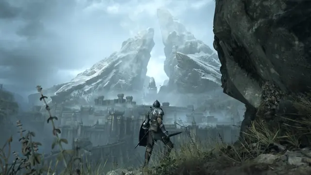
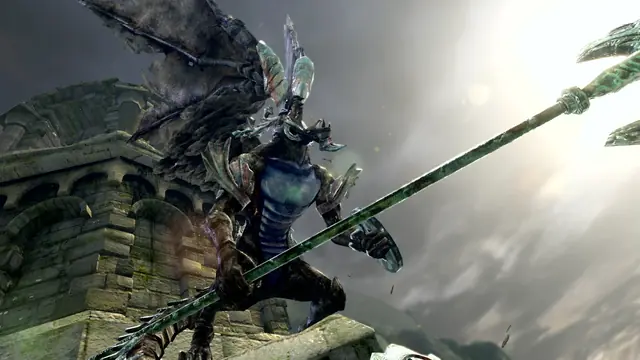
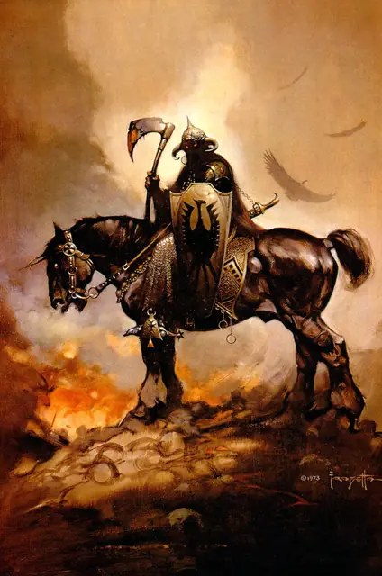
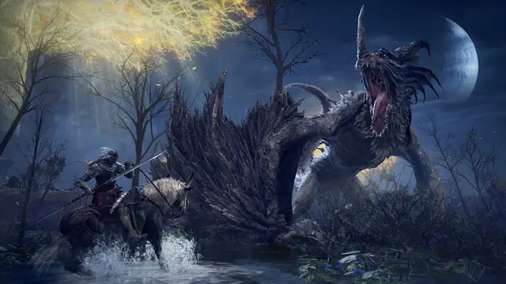
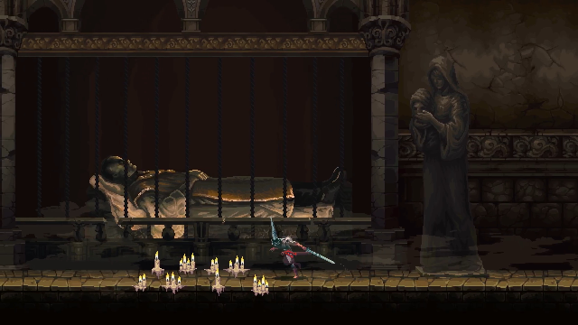
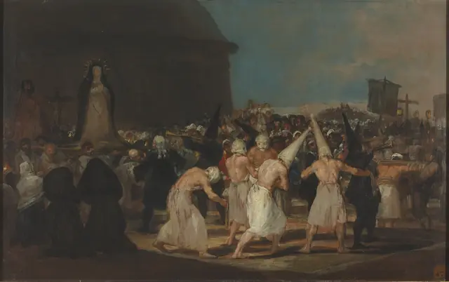
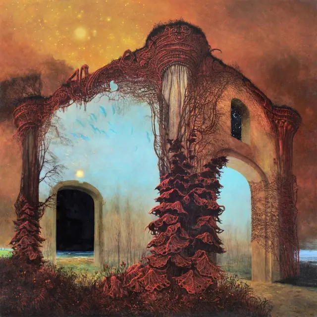
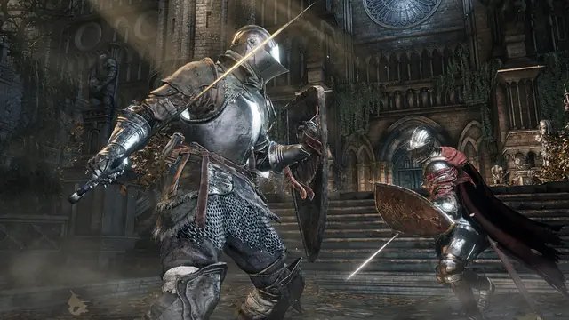
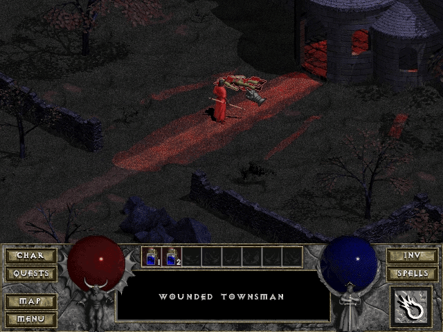
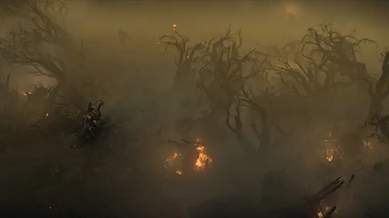
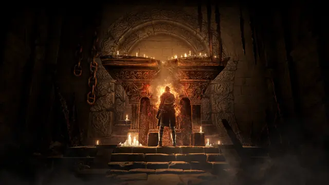
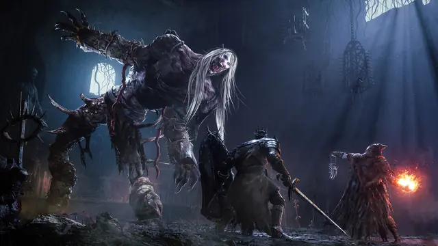
Games
- Diablo II
Study the grim darkness that Diablo IV's art team set out to return to.3
- Demon's Souls
Study the messages players leave each other, scrawled on floors and walls.1
- Dark Souls
Study how its cathedrals inspire a feeling of the dizzying sublime while statues and relics hint at the story.10
- Dark Souls III
Study its lighting, which Robert Roeder matched with a teal atmosphere, pale blue light from above and the orange glow of candles when he built a chamber from a concept in its Design Works art book.15
- Blasphemous
Seville's religious art and Goya's penitents in pure pixel art, as a mixture of Metroidvania and Dark Souls.10,9
- Elden Ring
An open world meant to look painterly, fantastical and mythological, with a feeling of romanticism in solitude.14
- Diablo IV
Study its tile-set dungeons and its lighting, built around the pillars of old masters and a return to darkness.2
Film, art and more
- Berserk
Kentaro Miura's dark fantasy epic. Kotaku sees its influence in every game Miyazaki has directed since Demon's Souls.6
- Frank Frazetta
His sombre but energised Conan covers helped revive the character. Study the heavily muscled heroes and their dynamic sense of movement.13
- Francisco Goya
Blasphemous's creative director cites his paintings of 1812 to 1819, A Procession of Flagellants among them.10
- Rembrandt
Diablo IV's "old masters" pillar names him for controlled detail, tonal range and an expert use of colour.2
- The Eternal Champion
Michael Moorcock's heroes, usually doomed, in an indifferent universe.4 Miyazaki names the series among Elden Ring's influences, with The Lord of the Rings and RuneQuest.7
- Kingdom Death: Monster
A world with no sun, moon or stars, lit only by gothic-style lanterns, made for fans of FromSoftware's games and Berserk.22
Sources
- 1Bloodborne creator Hidetaka Miyazaki: 'I didn't have a dream. I wasn't ambitious'
- 2Diablo IV Quarterly Update, March 2022
- 3Diablo 4 returns to the dark style of Diablo 2
- 4Sword and Sorcery
- 5Berserk Manga Creator Kentarou Miura Passes Away at 54
- 67 Possible Berserk References In Elden Ring
- 7Hidetaka Miyazaki interview: FromSoftware's president explores the unknowns of Elden Ring
- 8Dungeon crawler or looter shooter? Nine video game genres explained
- 9'Blasphemous' Team Took "Purist" Approach to Game's Pixel Art Style
- 10How Video Game 'Blasphemous' Embraces the Catholic Gothic Tradition
- 11Postmortem: Blizzard's Diablo II
- 12'It's a tier above': How a giant, cryptic RPG like Elden Ring gets translated
- 13Frazetta, Frank
- 14Miyazaki likes to play a 'tough' Elden Ring character that can trade blows
- 15Designing a Dark Souls-Inspired Environment in Unreal Engine & ZBrush
- 16Long-time Dark Souls and Elden Ring dev thinks Miyazaki stores the entire story in his head
- 17The Game Kitchen on Blasphemous' ambiguous story
- 18Making of a Modular Gothic Environment with Procedural Systems, Trim Sheets, & Custom Shaders
- 19Exponential Height Fog
- 20Auto Exposure
- 21Multiple resolutions
- 22Kingdom Death: Monster Game Review